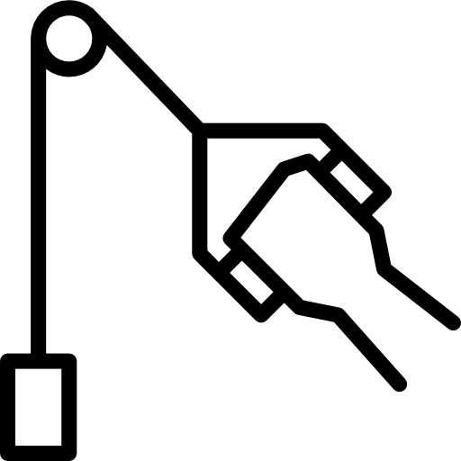

Docker
1. Docker 이미지 pull
docker hub -> image -> container
pull : docker hub 에서 내 컴퓨터로 image 를 가져
오는것
run : image 로 container 를 만드는것
# docker hub 에서 image 검색 $ docker search httpd
# image 다운로드 $ docker pull httpd
# image 확인 $ docker images